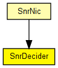
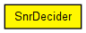

Decider module to be used with SnrEval
This component has been taken over from Mobility Framework 1.0a5.

The following diagram shows usage relationships between types. Unresolved types are missing from the diagram. Click here to see the full picture.
The following diagram shows inheritance relationships for this type. Unresolved types are missing from the diagram. Click here to see the full picture.
If a module type shows up more than once, that means it has been defined in more than one NED file.
| SnrNic (compound module) |
This is the easiest nic to implement "real" network behaviour. It uses the CsmaMacLayer and the SnrDecider and SnrEval modules. |
| Name | Type | Default value | Description |
|---|---|---|---|
| debug | bool | false |
debug switch |
| snrThresholdLevel | double |
| Name | Value | Description |
|---|---|---|
| display | i=box2_s |
| Name | Direction | Size | Description |
|---|---|---|---|
| uppergateOut | output | ||
| lowergateIn | input |
// // Decider module to be used with SnrEval // // This component has been taken over from Mobility Framework 1.0a5. // simple SnrDecider { parameters: bool debug = default(false); // debug switch double snrThresholdLevel @unit("dB"); @display("i=box2_s"); gates: output uppergateOut; input lowergateIn; }